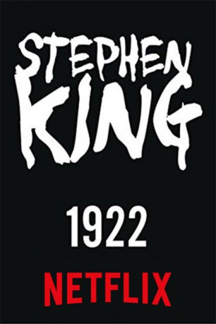

IMDB-Wertung: 6.3 / 10
IMDB-Wertung: 6.3 / 10  Tomatometer: 88
Tomatometer: 88  Metascore:
Metascore: 
A simple yet proud rancher in the year 1922 conspires to murder his wife for financial gain, convincing his teenage son to participate.
 IMDB-Wertung: 6.3 / 10 Tomatometer: 88 Metascore:
A simple yet proud rancher in the year 1922 conspires to murder his wife for financial gain, convincing his teenage son to participate.
Jahr: 2017
Dauer: 102 Minuten
FSK:
Land: USA Studio: NetflixTonspuren: DD5.1 - ,
Untertitel: Deutsch, Englisch, , Französisch, , ,
Auflösung: 1080p (1920x1080) Größe: 3225 MB
Genre: Thriller, Horror, Drama, Krimi, Mystery
Regisseur: Zak Hilditch
Drehbuch: Zak Hilditch
Soundtrack:
Darsteller:
 Thomas Jane als Wilfred James
Thomas Jane als Wilfred James Molly Parker als Arlette James
Molly Parker als Arlette James Brian d'Arcy James als Sheriff Jones
Brian d'Arcy James als Sheriff Jones Neal McDonough als Harlan Cotterie
Neal McDonough als Harlan Cotterie Graeme Duffy als Good Samaritan
Graeme Duffy als Good Samaritan Bruce Blain als Bank Guard
Bruce Blain als Bank Guard Nikolai Witschl als Concierge
Nikolai Witschl als ConciergeDatei: X:\Person\Stephen King\1922 (2017, FSK, 1920x1080).mkv seit 20.10.2017
Festplatte: HD Collection-7+mehr(A-Z)+Person
 Es gibt insgesamt 44 Filme in der Gruppe 'Person\Stephen King'
Es gibt insgesamt 44 Filme in der Gruppe 'Person\Stephen King'